Paper Without Code: A Website for Reporting Papers That Cannot Be Reproduced—and Publicly Shaming the First Author?
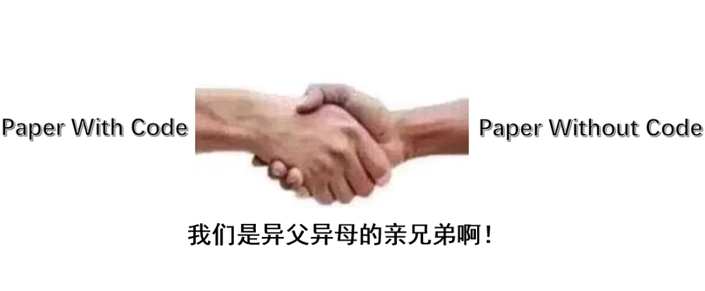
The number of papers in machine learning has been growing at a rate that is almost visible to the naked eye. As papers pour in like snowflakes, concerns about paper inflation, reproducibility, and the real significance of research have entered the spotlight as well. Research always builds on previous work: we look for something “new” and extend an existing theory, method, or technology into places no one has explored. But as the publication cycle gets faster and novelty becomes more aggressively pursued, it is increasingly reasonable to ask whether some of the foundations we stand on are stable enough.
Two years ago, a Reddit user named ContributionSecure14 posted the following:
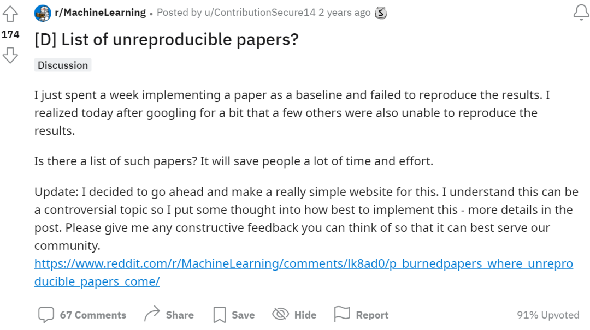
The user described spending a week trying to reproduce a paper and failing to obtain the claimed results. A web search revealed that other people had reported the same problem. That experience prompted a thought: if there were a public list of papers that people had been unable to reproduce, could it save other researchers a great deal of time and effort? From this idea came a somewhat unusual website called Paper Without Code.
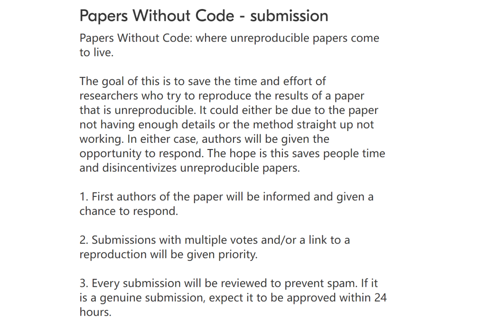
The website is extremely simple. One of its main functions is a form through which users can submit papers they have attempted but failed to reproduce.
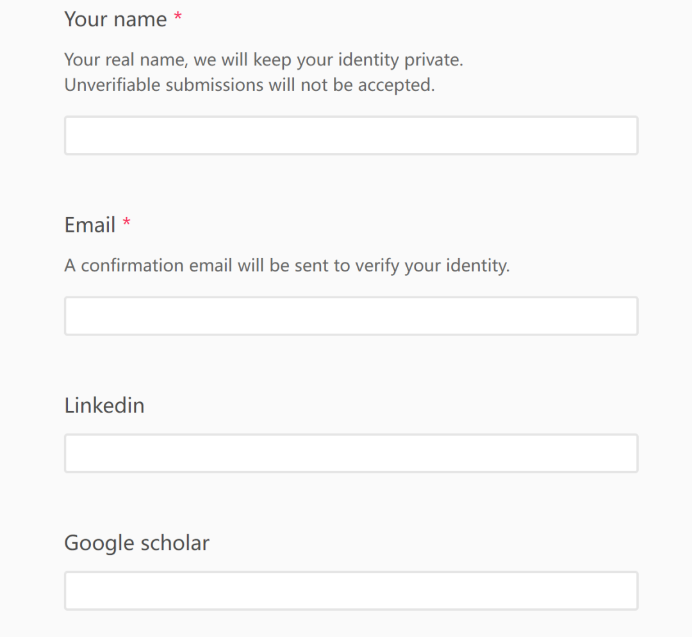
After receiving a submission, Paper Without Code emails the first author of the allegedly unreproducible paper and gives the author a chance to respond. The response window is one week. If that week passes without a satisfactory resolution, the paper can be added to the public list.
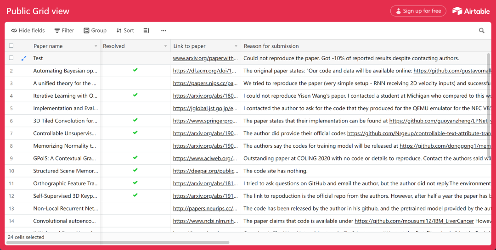
The submission form asks the person reporting the problem to provide a link to the paper, the reason it could not be reproduced, a link to the reproduction code, and the amount of time spent attempting reproduction. The public table also records when the email was sent, whether the author responded, and what the response said. Quite a few authors apparently did see the emails and subsequently provided code.
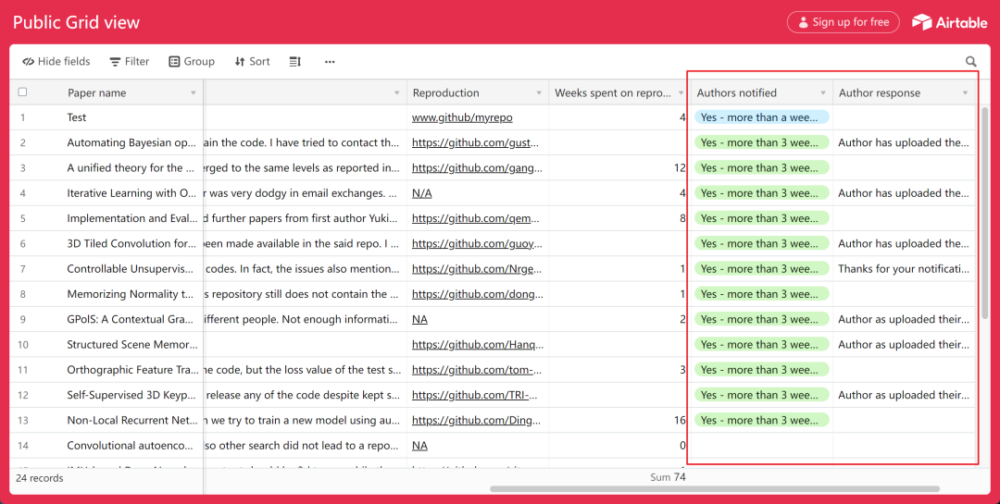
Some authors responded carefully and seriously.
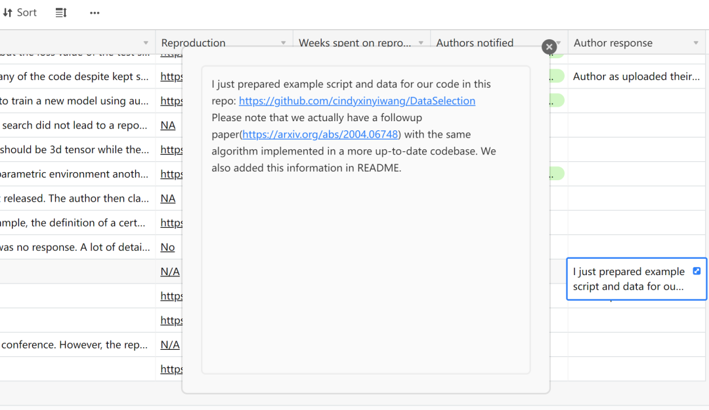
Others were much less pleased and directly described the approach as offensive.
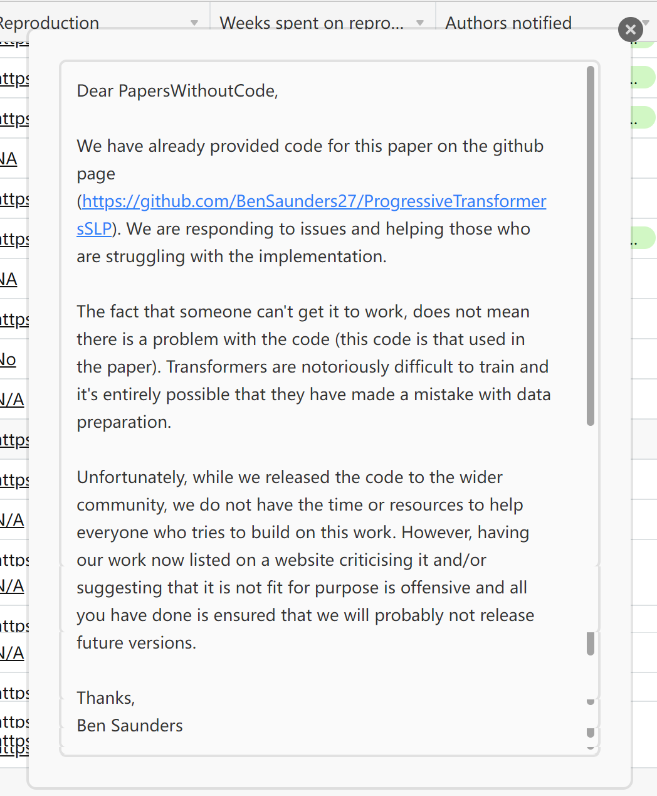
In absolute terms, participation in this effort to put unreproducible work on a kind of academic “pillory” was limited. At the time, only 24 papers had made the list. The more interesting part of the social experiment was the much broader discussion it triggered on Reddit.
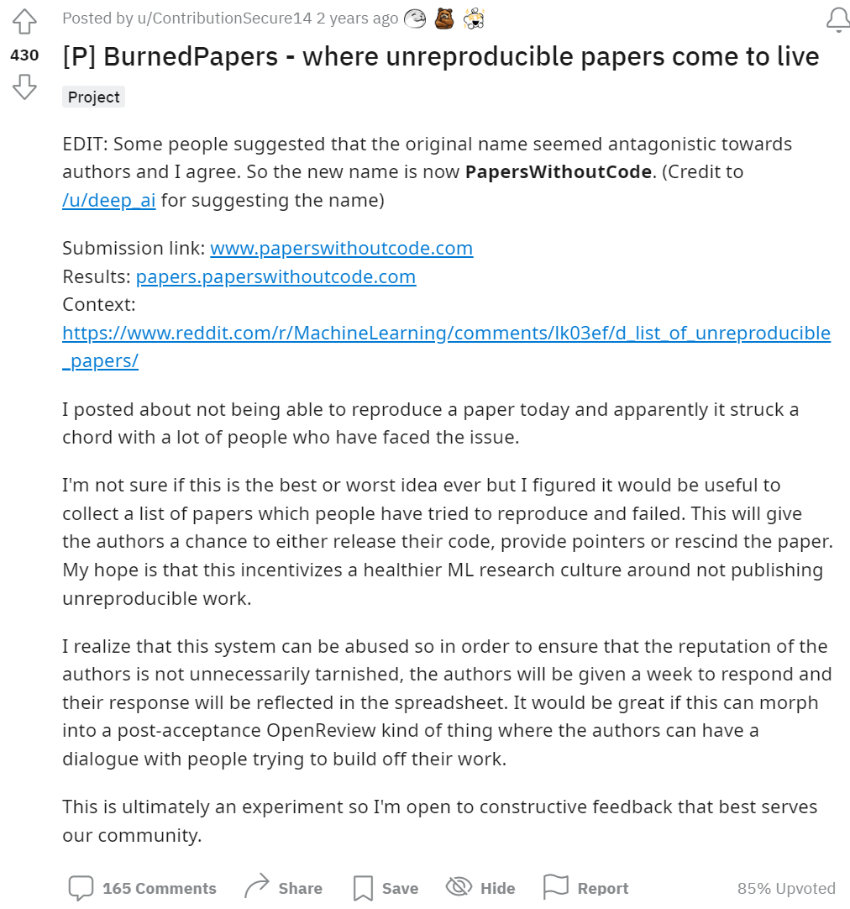
As the creator, ContributionSecure14, explained, the website was built to publish papers that people reported as unreproducible. Interestingly, the creator called the listed papers “BurnedPapers.” ContributionSecure14 admitted not knowing whether this was “the best idea” or “the worst idea,” but said the motivation was to encourage a healthier machine-learning research culture.
Supporters of the project have a straightforward argument: publishing research should be treated seriously, and researchers should remain responsible for what they publish rather than considering the job finished once the paper appears. Community scrutiny—and even the risk of public embarrassment—might also discourage low-quality paper production.
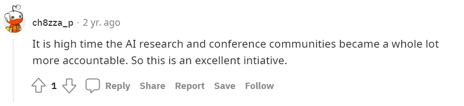
Surprisingly, however, many people criticized the mechanism. A common objection was that a shame-list of “unreproducible papers” is not necessarily a well-designed solution to the reproducibility problem. For one thing, a failed reproduction attempt does not reveal whether the original paper is wrong or the reproducer simply lacks the required skill, resources, or details. Indeed, the website's table showed that a substantial share of complainants did not provide their own reproduction-code repositories.
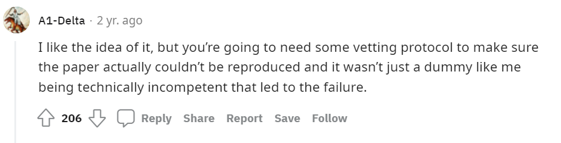
Others noted that a paper may be unable to release code or data for legitimate reasons. The data could involve privacy or politically sensitive material; a system architecture could involve commercial constraints that prevent disclosure of a production model. The value of a paper is not automatically determined by whether its code and data are public. At the same time, whether undisclosed data or architectural details undermine the scientific value of the work is itself something peer review should consider.
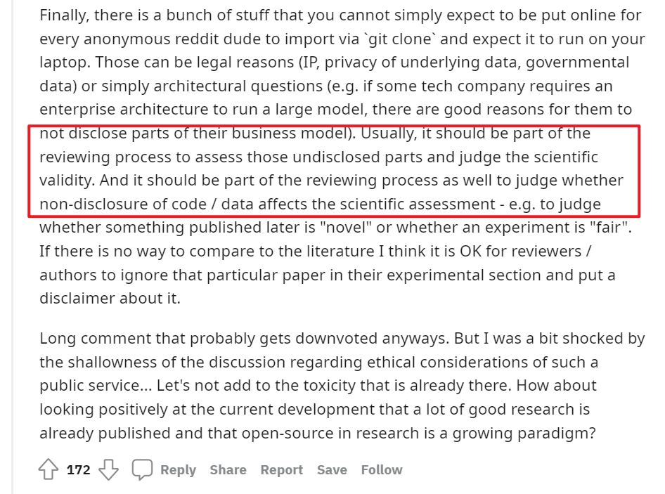
There is also a workload problem. A norm of “publish code or be publicly shamed” can impose additional obligations on researchers. The ethical boundary is not obvious: should a researcher be required—not merely encouraged—to ensure that readers can understand not only the paper, but also every implementation detail and practical design choice, some of which may be considered common knowledge within the field?
Many commenters thought the basic idea was good but the implementation too crude. Automatically labeling a paper a “BurnedPaper” after one week without a response felt to them more like populist punishment than careful scientific evaluation. Borrowing a conservative political intuition, some argued that the reproducibility system should be improved incrementally. Instead of maintaining a blacklist, a site could record what reproduction was attempted, exactly where it failed, and why the reproducer could not proceed. Such a design could at least help diagnose problems on the reproducer's side.
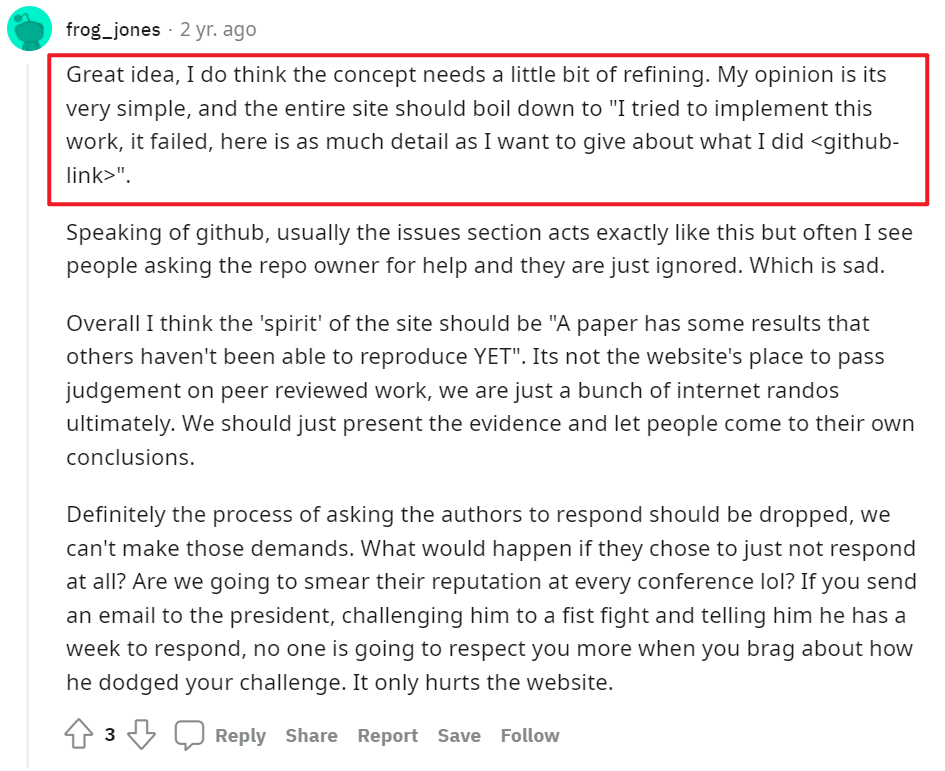
Another alternative is a curated list of successfully reproducible papers, together with code and implementation details—an idea that has already been implemented in various forms.
Amid the criticism, some commenters defended the spirit of the project. They argued that critics saw the “mob” side of public scrutiny but underestimated the damage that bad work can inflict on science. If unreproducible papers are like memory leaks—resources occupied by information no longer useful—then human attention is finite. The research community may genuinely need a kind of garbage-collection mechanism that frees attention from work that should no longer be relied on.
As the debate continued, the central question gradually shifted. It was no longer simply whether this one experimental website was right or wrong, but how scientific publishing should be monitored more generally.
We know reproducibility matters. We also know that paper inflation, fabricated experiments, and deliberate withholding of crucial information can cause real harm. The challenge is therefore: how can we make sure the research we cite and build upon rests on a solid foundation, while avoiding indiscriminate attacks that impose unnecessary costs or reputational damage on authors?
One commenter had suggested that reviewers should explicitly assess whether undisclosed data meaningfully affects a paper's scientific value. Another immediately objected that if peer review alone were sufficient, the strategy would already have succeeded. They cited discussions of psychology's reproducibility crisis as evidence that peer review by itself may not rescue a research culture in which weak data are used to support strong theories, and emphasized that science should be decentralized.
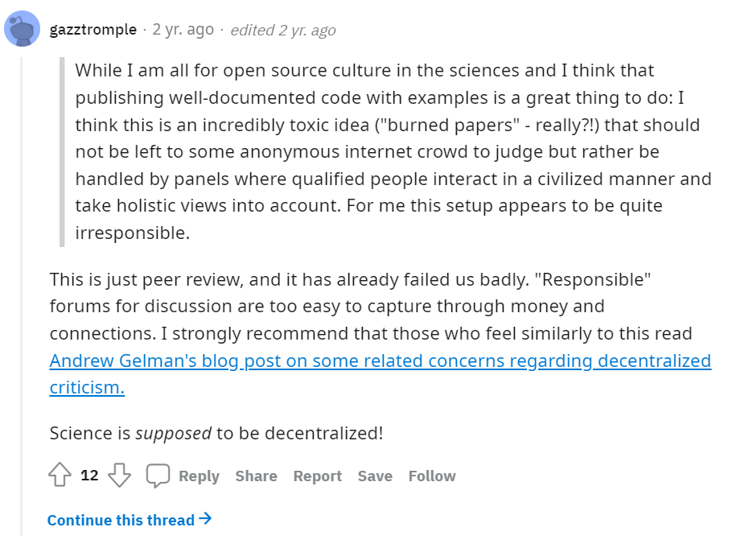
Article: What has happened down here is the
winds have changed
Link: https://statmodeling.stat.columbia.edu/2016/09/21/what-has-happened-down-here-is-the-winds-have-changed/
The ensuing argument was particularly revealing. It resembled the perennial political question of reform versus revolution, transplanted into a field that appears unrelated to politics. The commenter who had been challenged insisted that behind the abstract word “science” are real scientists. Anonymous judgments from random people on the internet, even when motivated by good intentions, can give those people the power to destroy a young researcher's career over what may be a minor mistake. The safer approach, in this view, is for a sufficiently professional institution or qualified peers operating under professional norms to carefully determine whether a paper is actually wrong. In many cases, an unreproduced result does not imply total fraud or invalidity; the conclusions may only need to be weakened or additional assumptions stated.
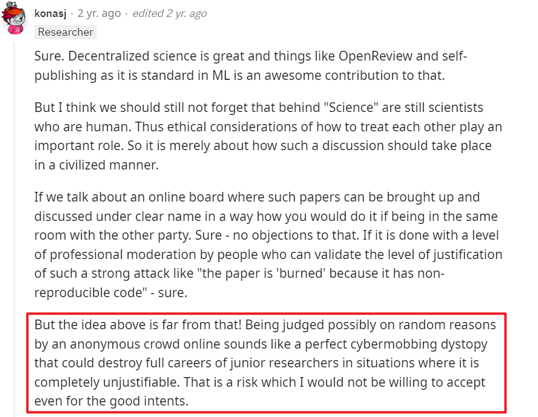
The opposing view was equally sharp: warnings about “mob rule” can become a standard argument for centralized gatekeeping. Rather than focusing only on the hypothetical young researcher whose career might be damaged by criticism, perhaps we should pay more attention to researchers whose careers are already being damaged by being flooded with unreliable work.
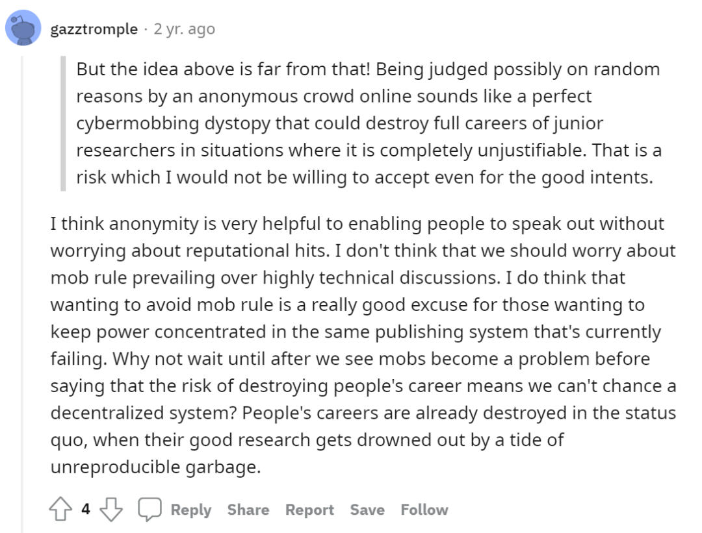
At this point the argument reaches an impasse. Should the system improve reproducibility top down, for example by introducing standardized labels such as reproducible / difficult to reproduce / unreproducible so researchers can judge which work to trust? Or should science encourage bottom-up community oversight, with sites like Paper Without Code creating reputational pressure that discourages careless or fraudulent research?
To answer that, it is useful to return to the root question: why do unreproducible papers exist in the first place?
AI's “reproducibility crisis” had already become a topic of discussion years earlier, following similar concerns in biology and psychology. If research aims to increase human knowledge, then knowledge naturally seeks some degree of generality, and repeatable experiments are one important route toward generalizable knowledge.
Some barriers to reproduction are simply technical and economic. Many AI papers from large technology companies require computational resources that ordinary researchers cannot afford. Independent researchers may have no realistic budget to repeat the experiments, while wealthy organizations can in practice escape some forms of external scrutiny because only they possess the necessary resources.
A second issue may be deeper and resembles problems seen in experimental psychology. AI is still a relatively weak-theory discipline compared with fields such as physics. In physics, experiments are often guided by a more explicit theoretical structure; in AI, the absence of a complete and rigorous theory means empirical exploration can be much more open-ended. This theoretical weakness can give researchers greater interpretive freedom: a conclusion that holds only under a particular combination of settings may be presented as general; results caused by data leakage may be generalized; benchmark accuracy may be mistaken for real-world accuracy. All of this can contribute to apparent results that others cannot reproduce.
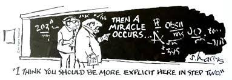
From this perspective, Paper Without Code has clear limits. It cannot solve the reproducibility problem for experiments that are too expensive for independent researchers to rerun, even if the code is public. Nor can it solve the problem of overly strong conclusions that arise from weak theoretical guidance. In that situation, the site risks degenerating into an attack on individual papers rather than a mechanism for fixing the underlying research process.
As a signal of paper quality, its logic is also weak. The chain “a reproducer failed → the author was asked to reply → no reply → public shame list” is not strongly correlated with the paper's actual quality. A reproduction can fail for many reasons that do not imply an error in the paper, and an author can fail to respond for many reasons that do not imply guilt. An author who responds and releases code does provide a positive signal of reliability; the absence of code, however, does not logically prove that the paper is bad or fraudulent. That greatly narrows the legitimate role of a site like Paper Without Code.
This does not mean that decentralized community oversight should disappear. We need outside discussion and scrutiny to challenge rigid institutions and flawed processes, and we need ways to question research produced by those systems. But the ultimate goal is not to attack one or two specific papers. The purpose of oversight should be to make the research system reliably produce work that others can cite and confidently build upon. Achieving that requires channeling and organizing decentralized scrutiny—and eventually turning its useful parts into institutionalized procedures.
That is a much larger problem than either Papers With Code or Paper Without Code can solve by itself.